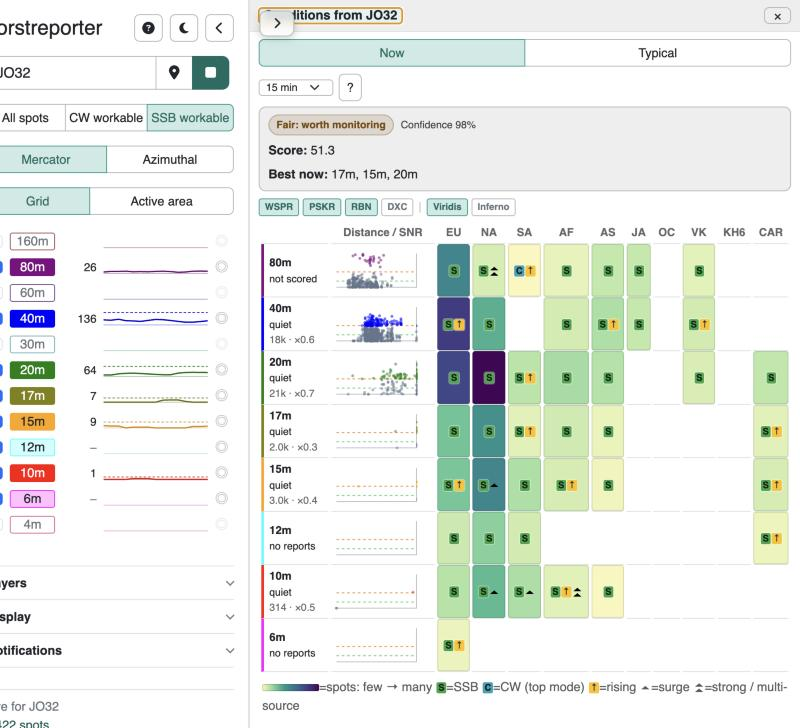
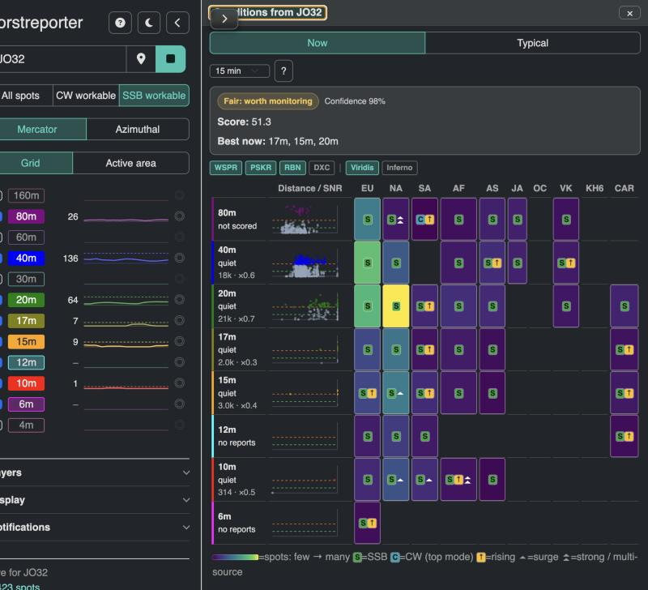

The Now band matrix: six ways to show activity
What the current matrix does, and why it reads wrong


- The scale is linear-to-global-max on data that spans five decades. Today's payload runs from 1 spot (80m SA) to 74,732 (20m NA). Even with the sqrt stretch, 15m to SA at 1,585 spots lands at 15% of the ramp and looks "almost nothing". Two or three cells own the whole colour range; the rest collapse onto the sparse end. The eye reads "only 20m and 40m EU/NA are open", which is false.
- Spot count is the wrong quantity to colour. It mostly measures how many stations live in a region. EU and NA will always be the hot columns and AF, VK, JA always cold, whatever the ionosphere does. The question an operator asks a cell is "is this path open, and is it better than usual?", and the backend already answers both (
ssb_open/cw_open, and the climatology mean behind the z-score). Neither is what the fill shows. - Viridis and inferno carry no ham semantics. On dark, the busiest cell is bright yellow (reads as a warning). On light, the same cell is near-black purple (reads as dead). The ramps are also reversed per theme, so a learned mapping does not survive a theme switch. Users must keep consulting the legend.
- Three visual languages fight inside one chip. Fill colour (count), coloured badges S / C / up-arrow (mode, trend) and chevrons or rings (surge). The green S badge sits on nearly every cell today (59 of 60 cells are SSB-open), so it is a lot of ink for almost no information, and its green collides with the mid-viridis green.
- The row and its cells disagree. The row header says "quiet, x0.3" (reports versus this hour's normal) while the cells next to it are coloured against the global maximum. 12m says "no reports" (the row follows the SSB-workable floor from the sidebar) while four 12m cells are lit. Two normalisations and two filters in one row.
So the fix is mostly about what is encoded and on which scale; the palette is secondary. Each proposal below picks one quantity per channel, uses the same mapping in both themes, and drops the badge stack to at most one glyph.
Six proposals
1. One ink, five decades
Keep the heatmap, fix the scale. One hue (the app accent), five discrete steps by order of magnitude: single digits, tens, hundreds, thousands, ten-thousands. The step is the distance from the page colour, so the direction is identical on both themes. Mode is shape, not a badge: solid chip = SSB open, outlined chip = CW only. One glyph for rising, a ring for a surge.
- Encodes
- fill = spots (log, 5 steps); shape = SSB / CW; triangle = rising; ring = surge
- Gains
- Every lit cell is legible; the 20m row now shows seven open paths instead of two. Steps are nameable ("hundreds to AF"), so the legend becomes a sentence. No per-theme reversal.
- Loses
- Still colours raw count, so EU/NA still dominate. Finding 2 stays.
- Needs
- frontend only
- Effort
- small
2. Against normal
Colour the thing the row header already talks about: this cell's reports against its own normal for this hour. A diverging scale with a neutral middle: cool = quieter than usual, page-grey = normal, warm = livelier, hot = surge. The rows and the cells finally agree. A dashed empty chip means "usually open at this hour, nothing now", which today is invisible.
- Encodes
- fill = ratio to normal (5 steps, diverging); dashed = expected but silent; shape = SSB / CW
- Gains
- EU/NA stop hogging the palette; AF at 2x normal is as loud as NA at 2x normal. The anomaly channel (chevrons / rings) folds into the fill. Blue-orange is colour-blind safe.
- Loses
- You no longer see absolute volume (a "normal" cell with 5 spots looks like a "normal" cell with 50k). Cells without a baseline (widened area, under 3 sample days) fall back to a flat "open" chip.
- Needs
- backend: expose
expectedper cell from the existing climatology mean (base.Meaninprop_intel_v2.go, scaled to the window) - Effort
- small frontend + small backend
3. Band ink
The matrix borrows the band rail's canonical colours: every chip in the 20m row is a tint of 20m green, every 10m chip a tint of 10m red. Five tints by decade, outline for CW only. The dock stops having a palette of its own, and a row reads as "20m is lit toward NA and EU" in the same colour the map and the rail use for 20m.
- Encodes
- hue = band (fixed); tint = spots (log, 5 steps); shape = SSB / CW
- Gains
- No new colour vocabulary; map, rail and matrix share one. Cross-band scanning is by row, where the colour is constant, so the tint is the only thing varying.
- Loses
- Perceived weight differs per hue (17m olive vs 10m red), so comparing a 17m cell to a 10m cell by eye is weaker. 12m cyan and 15m orange stay pale on light.
- Needs
- frontend only
- Effort
- small
4. Disc and ring
No fill colour at all. Each cell is a disc (reports now) drawn over a thin ring (normal for this hour), both radii on a log scale. Disc spilling outside its ring = livelier than usual; disc inside the ring = quieter; ring with no disc = usually open, dead right now. Filled disc = SSB, hollow disc = CW only. Discs take the band colour so rows tie to the rail.
- Encodes
- disc size = spots (log); ring size = normal (log); disc vs ring = anomaly; filled / hollow = SSB / CW; tick = rising
- Gains
- Both absolute volume and "versus normal" in one mark, with no palette to learn and nothing that flips between themes. Column scanning still works ("who is open to JA"). Degrades cleanly: no baseline, no ring, the disc still shows volume.
- Loses
- Smallest cells (1 to 9 spots) are 3 px dots; the eye needs the ring to judge them. Busier than flat chips.
- Needs
- backend: same
expectedfield as proposal 2 - Effort
- medium frontend (SVG per cell, keep the ARIA grid) + small backend
5. Ranked ribbons
Drop the region columns. Each band becomes one line that lists its open regions busiest-first, and the type itself is the mark: ten-thousands set bold and large, tens set light and small. A dotted underline is CW only, a thin arrow is rising, an orange mark is a surge. The row answers "where is 15m open, in what order" at reading speed and needs about half the width of the grid.
- Encodes
- order = rank; weight and size = spots (log, 5 steps); underline = CW; arrow = rising; mark = surge
- Gains
- Narrowest option, no colour semantics at all, empty regions cost nothing (OC, KH6 simply do not appear). Reads like a DX cluster line.
- Loses
- No column scan: "which bands reach JA" means reading every line. Rank hides magnitude gaps (NA at 75k and EU at 43k are neighbours).
- Needs
- frontend only; keyboard model changes from grid to list
- Effort
- small to medium
6. Beam roses
Regions sit where they actually are: each band gets a small compass rose with one wedge per open region at its true short-path bearing from the QTH. Wedge length is reports on a log scale, filled for SSB, outlined for CW. Next to it, the top headings as numbers, which is the thing an operator with a rotator actually does. A single bearing key at the top teaches the geometry once.
- Encodes
- angle = bearing; wedge length = spots (log); filled / outlined = SSB / CW; text = top headings
- Gains
- Spatial, so it matches the map and the rotator. Nine roses replace ninety cells. Strongly ham-native; nothing else looks like this.
- Loses
- Region scan is by angle, not by column. Bearings are to a region centroid, so a wedge is a heading hint, not a beam heading. Needs the QTH to compute angles (the dock already has it). Long path is not shown.
- Needs
- frontend only (bearings from region centroids, which
prop_intel.goalready defines) - Effort
- medium
Side by side
| Proposal | Fixes finding 1 (scale) | Fixes finding 2 (count vs open) | Same in both themes | Column scan | Backend | Effort |
|---|---|---|---|---|---|---|
| 1. One ink, five decades | yes | no | yes | yes | none | S |
| 2. Against normal | yes | yes | yes | yes | expected per cell | S+S |
| 3. Band ink | yes | no | yes | yes | none | S |
| 4. Disc and ring | yes | yes | yes | yes | expected per cell | M+S |
| 5. Ranked ribbons | yes | partly (rank) | yes | no | none | S-M |
| 6. Beam roses | yes | no | yes | by angle | none | M |
Recommendation
Build 4, Disc and ring. It is the only option that shows volume and "versus normal" in one mark, works identically on both themes, keeps the grid (so column scans and the ARIA keyboard model survive), and reuses the band palette instead of adding one. The backend change is a single field. If flat chips are preferred, 2 (Against normal) is the same idea in colour and the cheapest real fix. 6 (Beam roses) is the one I would add later as a second view toggle, not as the default: it is the most memorable, but the grid answers "who reaches JA" faster.
Not recommended on their own: 1 and 3 are quick wins on the scale but leave EU/NA owning the matrix, which is finding 2. 5 is the right shape for a narrow dock on a phone, not for a 620 px desktop panel.